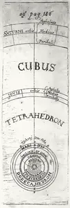

Book V: On the Harmony of Celestial Motions¶
Harmonices Mundi Liber V: Architectonicus, De Harmonia Perfectissima Motuum Coelestium (Linz: Tampach/Plancus, 1619, pp. 177–255; Frisch V, pp. 269–329) & Epistola ad Mästlinum (Graz, 1597)
Outline of Book V¶
Letter to Mästlin (1597): The Kepler Right Triangle
“If upon a straight line cut in :term:`extreme and mean ratio <sectio-divina>` one constructs a right-angled triangle out of the segments and the whole—in such a way that the hypotenuse subtending the right angle is the greater segment (or the whole), and the base is the lesser segment (or the greater)—then the square on one leg together with the square on the other composes the square on the hypotenuse, while the **three sides themselves stand in continuous geometric proportion*!”* (Kepler to Michael Mästlin, Graz, October 1597).

Chapter III, Prop. VIII: The Harmonic Third Law
In the Fifth Book of Harmonices Mundi (completed May 27, 1618; printed 1619), Kepler returns after twenty-two years to the five regular solids of Mysterium Cosmographicum (1596), armed now with Tycho Brahe's exact observations and his own discovery in Astronomia Nova (1609) that each planetary orbit is a focal ellipse cORB with the Sun Solf at one focus, sweeping equal areas in equal times between Pper (perihelion) and Aaph (aphelion) along the major axis APaxis (semi-major axis $a$ around orbital center Corb).
Chapter IV: Consonances of Extremal Planetary Motions
In Chapter IV, Kepler asks which physical quantities of orbital motion the Creator tuned to musical consonance: not mean distances alone, nor linear orbital speeds, nor solar-center periods—rather apparent daily heliocentric angular motions ($\omega$) at aphelion (Aaph) and perihelion (Pper)! Because a planet sweeps equal focal sector areas around the Sun (Solf) in equal times—comparing the short, wide perihelion sector SECPER against the long, narrow aphelion sector SECAPH—the extremal daily angular speeds stand strictly in the inverse square of the extreme solar distances:

Chapter V: Planetary Tuning in the Musical Scale (Cantus Durus & Mollis)
Mapping the six planets’ aphelion and perihelion angular speeds onto Book III’s Just-Intonation diatonic lattice, Chapter V shows that cosmic motions reproduce the complete eight-note scales of *Cantus Durus* and *Cantus Molle* (with string-length lattice 2160 down to 864, directly matching Book III Chapter VI):

Chapter VI: The Engraved Planetary Melodies & Celestial Music Studio
In the celebrated Chapter VI, Kepler assigns each individual planet its own sung melody (harmonia motuum extremorum), gliding continuously between its minimum speed at aphelion and maximum speed at perihelion:

Chapter VII: The Four Universal Six-Planet Creation Chords
In Chapter VII (Quod Universales omnium sex Planetarum Harmoniae possint existere), Kepler asks whether all six planets can ever simultaneously strike a single consonant six-part chord—a cosmological alignment so rare that “it is possible that it has happened only once, at the very beginning of Creation.” By intersecting the extremal intervals of all six planets, Kepler proves that precisely four universal six-planet harmonies exist: two in the bright Major genus (Genus Durum, p. 209: Ut ♮ concordet and Ut c concordet) and two in the solemn Minor genus (Genus Molle, p. 210: Ut b concordet and Ut c concordet).
Chapter VIII: The Four-Part Planetary Choir (Bass, Tenor, Alto, Soprano)
In Chapter VIII, Kepler casts the six planets into the four canonical roles of a Renaissance polyphonic choir (Discantus / Soprano, Altus, Tenor, Bassus): Mercury—fastest and widest in eccentric range—sings the agile Soprano; Venus and Earth sing the quiet, nearly uniform Alto (moving within a Diesis or Semitone); Mars, bold and piercing, sings the Tenor; while Saturn and Jupiter, slow and grave, sustain the foundational Bass.
Chapter IX: Polyhedral Synthesis of Orbital Eccentricities & Solar Epilogue
In Chapter IX—comprising Propositions I through XLVII—Kepler solves the grand synthesis uniting Mysterium Cosmographicum (1596) with Harmonices Mundi (1619). Why did the five regular solids alone leave small orbital residuals? Because God tuned the planetary spheres simultaneously to two archetypes: the inscribed regular solids establish approximate inter-sphere spacing, while the just-intonation musical consonances of extremal motions lock the exact eccentricities $e = \frac{\sqrt{q} - \sqrt{p}}{\sqrt{q} + \sqrt{p}}$ (for Mars’s fifth $2:3$, $e = 5 - 2\sqrt{6} \approx 0.1010$). The book closes with Kepler’s rapturous hymn to the Sun and cosmic harmony (Epilogus de Sole, pp. 251–255).